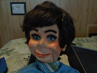

Classroom report
6/21/2012
{kind=link}

From Rodney McVey:Bufford & I are going to my grand daughters Kindergarten class Tuesday and you can rest assured that his case, will be adorned with several of your novel sticker labels! Just like the looks I see, when I go around with my classic '67 Pontiac Tempest, I appreciate the looks I get not only from the children, but the adults as well when they see Buford. Ventriloquist "dummies" were something you'd occasionally see on TV or special events, (not to be confused with Newsy-Vents), many decades ago. Now, they are mostly cast as containing long, dead, evil spirits so, some of the kids are pretty reluctant to get to close right away...but the adults are on the edge of their seats, with anticipation, waiting for me to open my case. Thanks for being a part of these memorable moments, from your contributions both past & present, in the field of ventriloquism!
* * * * * *
From Mr. D: The fact that some kids are reluctant to see a vent figure closeup is not necessarily a bad thing from the perspective of a performer. It makes performing easier...but once they see the figure in action and have time to connect with him and his personality you may still have to ask them to "back away". :-) When all is said and done, I suspect the classmates of your granddaughter are going to be envious, wishing their grandpa was a ventriloquist!
* * * * * *I
Follow-up from Rodney: One Kindergarten student had seen "someone like Buford" before, on the Internet and none of the pre-K students said they had ever seen "someone like Buford," but a few were very cautious. Plus, a couple of the teachers said they had never seen a ventriloquist figure in person before. They all commented on his face & how realistic it was... Over all, they all had a great experience that hopefully will stay with them for a long time!
The school we visited was Elmwood Elementary in Syracuse, NY. Because of budget cut backs, this is the last year that Elmwood will be operating. That's why "we" decided to do a walk through together and visit as many students and teachers as was allowed. My Granddaughter, Jada, attended Kindergarten there and that was the initial reason for getting Buford "Out Of The House", for some fresh air!
The school we visited was Elmwood Elementary in Syracuse, NY. Because of budget cut backs, this is the last year that Elmwood will be operating. That's why "we" decided to do a walk through together and visit as many students and teachers as was allowed. My Granddaughter, Jada, attended Kindergarten there and that was the initial reason for getting Buford "Out Of The House", for some fresh air!
{kind=link}